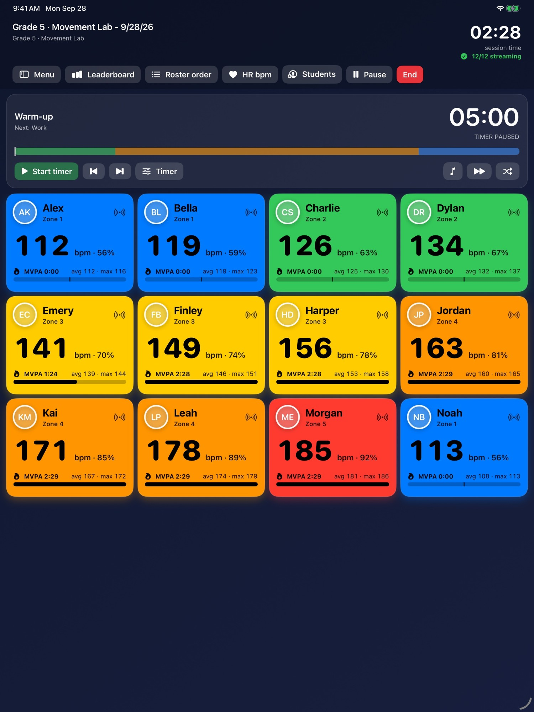
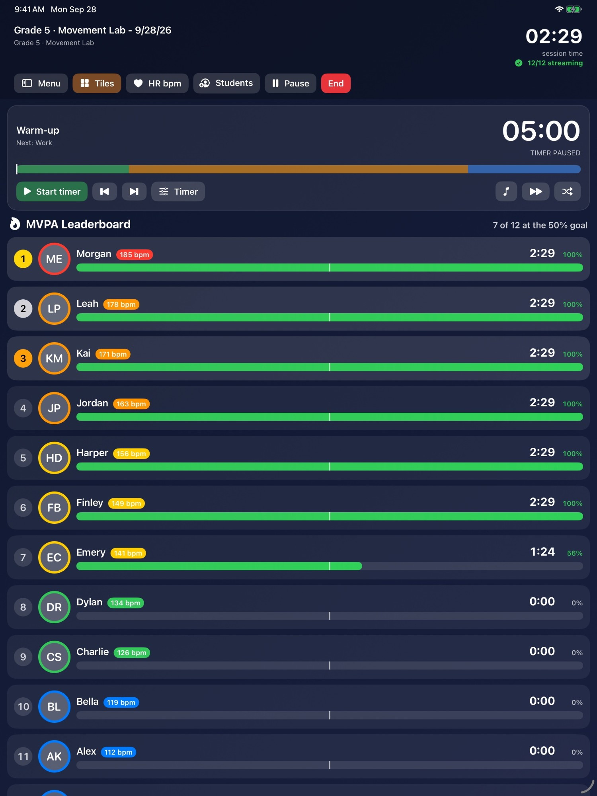
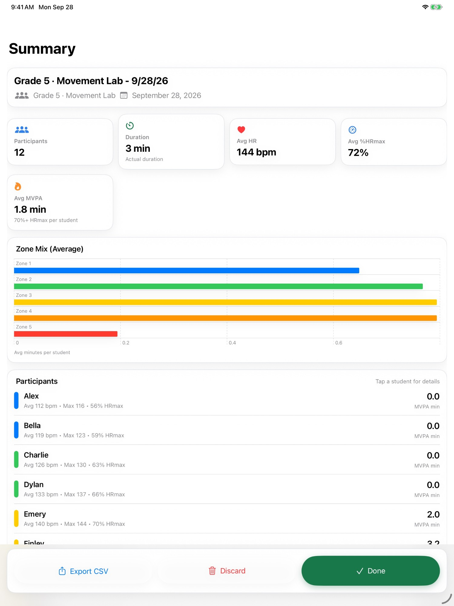
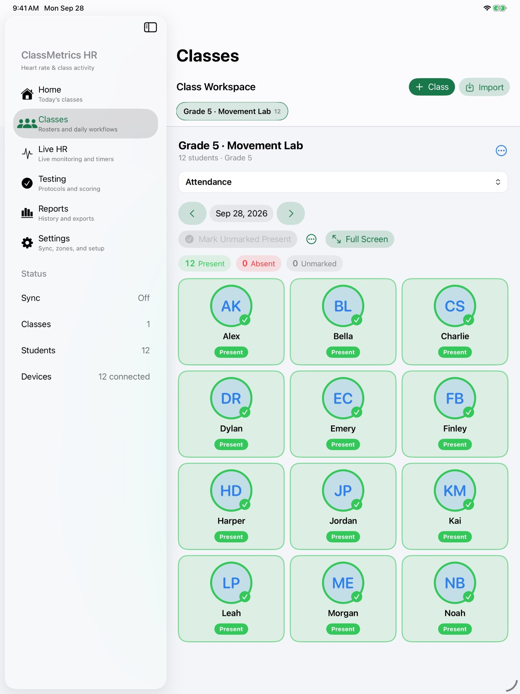
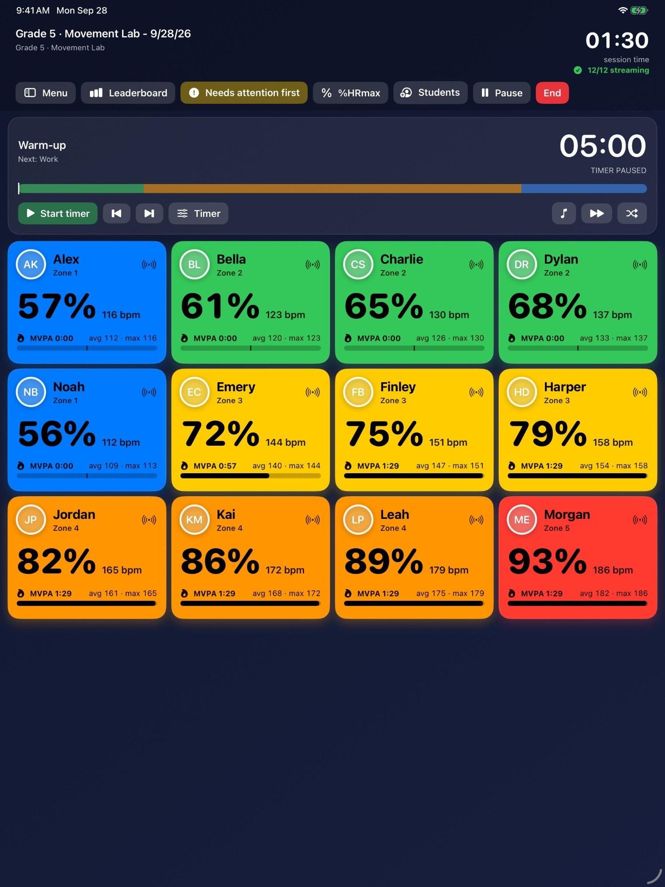

Technology that supports PE teachers.
Apps for the gym, built by a physical education teacher educator. See every student's effort live, give feedback on real movement, and hand back data a school can use.

Four tools, each with a job.
ClassMetrics HR
Live heart-rate monitoring for a whole class on one iPad. Standard Bluetooth chest and wrist straps stream to on-screen zone colors in real time, and a lesson turns into a record of time in moderate to vigorous activity.
CoachSAGE
A frame-accurate video analysis app for PE teachers and coaches, built as a successor to Coach's Eye. Step through a clip, draw on the movement, and compare two attempts side by side.
Basal
An adaptive macro tracker. Describe a meal in plain language and AI turns it into calories and macros, then your targets adjust against your actual weight trend.
FieldTracker
Field experience management for PE teacher education programs. Placements, hour logs, supervisor sign-off and accreditation reporting in one place.
Every student's effort, at a glance.
Strap up the class and press start. The iPad keeps count, so you can keep teaching.
- A whole class on one screen, colored by heart-rate zone
- An MVPA leaderboard that shows who has reached the goal
- An interval timer and playlists for stations and circuits
- Attendance from the same roster
- A lesson summary with average heart rate, zone mix and MVPA per student




Built for teachers, by one.
Process, not just outcomes
A fitness score says what a student can do. Time in a heart-rate zone says what they actually did in your lesson. The second one tells you whether the teaching worked, and it is the harder one to collect, so that is where these tools start.
Built in real classes
These are written by a physical education teacher educator and used in real gyms and real placements: noisy, fast, and short on prep time. A tool that needs ten minutes of setup before class does not get used twice.
Shaped by your requests
What gets built next comes from teachers. If a new app or a change to an existing one would help in your gym, ask for it, and it goes on the list.
What would help in your gym? Ask for a new app, or a feature in one you already use.
Send a requestQuestions, ideas, and help.
support@movemetric.orgOne person reads that inbox and normally replies within two business days. During the school year it can take a little longer.
- Which app you are asking about
- What you teach, and the grade levels
- For an idea or a feature, the request form is quicker
- For a bug report: the device, what you did, and what happened instead